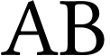
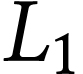

Étude de lentilles convergentes
On dispose d’un banc d’optique, d’un objet lumineux $AB$ de hauteur $\pu{3,5 cm}$, d’une lentille convergente $L_1$ de centre $O_1$, de distance focale $f’_1 = \pu{10,0 cm}$, d’une lentille $L_2$ de centre $O_2$, de distance focale $f’_2$ inconnue et d’un écran. Le point objet $A$ est situé sur l’axe optique.
- L’objet lumineux est placé à une distance de $\pu{15,0 cm}$ de la lentille $L_1$.
Où doit-on placer l’écran afin de visualiser une image nette de AB à travers la lentille $L_1$ ?
Solution
-
Relation de Descartes : $$ \dfrac{1}{\overline{O_1A’ }} - \dfrac{1}{\overline{O_1A}} = \dfrac{1}{f’_1} \iff \overline{O_1A’ } = \dfrac{f’_1 \cdot \overline{O_1A}}{\overline{O_1A} + f’_1} $$
-
A.N. $\overline{O_1A’ } = \dfrac{\pu{10,0 cm} \times \pu{-15,0 cm}}{\pu{-15,0 cm} + \pu{10,0 cm}} = \pu{30,0 cm}$
L’écran doit être placé $\pu{30,0 cm}$ derrière la lentille $L_1$.
- Dans ces conditions, quelle est la valeur du grandissement de la lentille $L_1$ ?
Solution
- Le grandissement est défini par : $$ \gamma = \dfrac{\overline{A’ B’}}{\overline{AB}} $$ si la lentille est mince et convergente, on a aussi $$ \gamma = \dfrac{\overline{OA’ }}{\overline{OA}} $$ donc $\gamma = \dfrac{\pu{30,0 cm}}{\pu{-15,0 cm}} = \pu{-2,0}$
- L’image est-elle droite ou renversée ? Est-elle plus grande ou plus petite que l’objet ?
Solution
- L’image est renversée car le grandissement est négatif.
- L’image est plus grande que l’objet car $\lvert \gamma \rvert > 1$.
- En déduire la dimension de l’image.
Solution
- Si on utilise la définition du grandissement on obtient $$ \overline{A’ B’} = \gamma \cdot \overline{AB} $$
- A.N. $\overline{A’ B’} = \pu{-2,0} \times \pu{3,5 cm} = \pu{-7,0 cm}$
L’image a pour dimension $A’ B’ = \pu{7,0 cm}$.
- On remplace la lentille $L_1$ par une lentille convergente $L_2$ de vergence $V_2$ inconnue. Sur le banc d’optique, l’objet est placé à $\pu{40,0 cm}$ de la lentille. On visualise une image nette lorsque l’écran se situe $\pu{66,7 cm}$ derrière la lentille.
Calculer la vergence $V_2$ de la lentille.
Solution
- La relation de conjugaison permet d’écrire $$ V_2 = \dfrac{1}{f’_2} = \dfrac{1}{\overline{O_2A’ }} - \dfrac{1}{\overline{O_2A}} = \dfrac{\overline{O_2A} - \overline{O_2A’ }}{\overline{O_2A’ } \cdot \overline{O_2A}} $$
- A.N. $V_2 = \dfrac{\pu{-40,0 cm} - \pu{66,7 cm}}{\pu{66,7 cm} \times \pu{-40,0 cm}} = \pu{4,0 \delta}$.
Où est passée la lentille ?
L’image $A’ B’$ d’un objet $AB$ donnée par une lentille est renversée et deux fois plus grande que l’objet. Les points $A$ et $A’ $ sont sur l’axe optique de la lentille, ils sont distants de $\pu{30 cm}$.
-
Schématiser l’objet et l’image avec une échelle au 1/5 suivant l’axe optique.
-
Placer la lentille $L$ et son centre optique $O$.
-
Placer le foyer objet $F$ et en déduire la position du foyer image $F’$ de cette lentille.
-
Quelle est la distance focale $f’$ de la lentille ?
-
Déterminer graphiquement le grandissement de la lentille $L$ dans les conditions d’utilisation.
-
Retrouver la valeur du grandissement par le calcul en mesurant $\overline{OA}$ et $\overline{OA’ }$.
La loupe
Pour réaliser une loupe on utilise une lentille mince convergente. La finalité d’une loupe est d’obtenir d’un objet une image plus grande et droite.
-
Dans ces conditions d’utilisation, quel est le signe du grandissement. La valeur absolue du grandissement est-elle supérieure à 1 ?
-
À l’aide d’une construction géométrique, indiquer les caractéristiques de l’image d’un objet à travers une lentille convergente de distance focale $f’$ lorsque : a. l’objet se situe à une distance comprise entre $f’$ et $2f’$ ; b. l’objet se situe à une distance comprise entre le centre optique $O$ de la lentille et son foyer objet $F’$. c. Dans quelle situation, la lentille est-elle utilisée en loupe ?
-
Un objet est observé à l’aide d’une lentille convergente $L$ de distance focale $f’ = \pu{50 mm}$. On désire obtenir un grandissement égal à $\pu{3,0}$.
Calculer les positions de l’objet et de l’image par rapport à la lentille.
La lentille $L$ est toujours utilisée en loupe. Un œil ne se fatigue pas lorsqu’il observe à l’infini.
-
Où doit-on placer l’objet $AB$ pour que son image soit rejetée à l’infini ?
-
Illustrer la situation à l’aide d’une construction géométrique.
Sur certaines montres indiquant le jour du mois, on place devant ce nombre une lentille convergente afin de le grandir.
-
Quel est le rôle de cette lentille ?
-
Quelle est la distance focale de la lentille ? Le nombre se situe à $\pu{2 mm}$ de la lentille, l’observation de ce nombre à travers la lentille doit se faire sans effort pour l’œil.
Principe du vidéo-projecteur
Caractéristiques
- Format : 16/9
- Résolution : W-XGA 1280x768
- Taille image: 0,75 m - 7,5 m
- Luminosité : 110 ANSI Lumens
- Niveau sonore : 25 dB (mode silencieux)/30 dB (mode normal)
- Distance : 0,9 m à 10 m
- Contraste: > 2500:1
- Optique : Lentille de projection : 22 à 27 mm
- Lampe : Durée de vie 4 000 heures
Le schéma ci-après représente de façon très simplifiée le principe d’un vidéo-projecteur. Une lampe éclaire une lentille convergente $L_1$, jouant le rôle de condenseur, placée devant une plaque de cristaux liquides.
L’image formée sur la plaque représente l’objet pour la lentille de projection $L_2$ convergente. On visualise son image sur un écran.
- D’après le trajet des rayons lumineux issus de la lampe et traversant $L_1$, indiquer comment doit se situer $S$ par rapport à la lentille $L_1$.
Lorsqu’on utilise une lentille de projection de distance focale $f’_2 = \pu{27 mm}$, la diagonale d’une image 16/9 a pour valeur $\pu{102 cm}$ pour une distance lentille-écran de $\pu{0,90 m}$.
-
Quelle est la distance entre la plaque de cristaux liquides et la lentille $L_2$ ?
-
L’image sur la plaque de cristaux liquides a pour largeur $L = \pu{2,74 cm}$ et pour hauteur $h = \pu{1,54 cm}$.
Quelles sont la largeur et la hauteur de l’image sur l’écran? -
Quelle est la diagonale de cette image ? Retrouve-t-on la caractéristique annoncée ?
-
Quelle est la signification d’une image 16/9 ? A-t-elle ce format ici ?
Lorsqu’on a peu de recul entre le vidéo-projecteur et l’écran, on conseille l’utilisation d’un appareil à focale courte. On sous-entend par focale courte, une distance focale $f’_2$ de la lentille de projection petite.
Le vidéo-projecteur décrit ci-dessus a une lentille $L_2$ dont la focale $f’_2$ peut varier de $\pu{22 mm}$ à $\pu{27 mm}$ (voir les caractéristiques).
-
Pour $f’_2 = \pu{22 mm}$, calculer les dimensions de la nouvelle image, l’image formée sur la plaque de cristaux liquides gardant les mêmes dimensions.
-
Le conseil d’utiliser une focale courte est-il justifié ?
Une carte plein cadre
Un appareil photographique comporte deux éléments essentiels : l’objectif et la pellicule.
On modélise :
- l’objectif par une lentille mince convergente $L$ de centre optique $O$ ; on appelle $F$ et $F’$ les foyers principaux, respectivement objet et image, de cette lentille, dont la distance focale est : $$ f’ = OF’ = \pu{+50 mm} $$
- la pellicule par un écran $E$, où se forme l’image réelle de l’objet photographié.
L’objectif est conçu pour pouvoir déplacer la lentille $L$ par rapport à la pellicule.
- On photographie un objet $AB$ situé à une très grande distance de $L$. En le considérant « à l’infini », et pour avoir une image nette, à quelle distance $OA’ $ de l’écran $E$ se trouve la lentille $L$ ?
Pour obtenir des images, sur l’écran $E$, d’objets plus rapprochés de $L$, il est nécessaire d’effectuer une mise au point, c’est-à-dire de faire varier la distance lentille-écran.
- Si l’objet $AB$ à photographier se rapproche de $L$, la distance entre la lentille et l’écran doit-elle augmenter ou diminuer ? Justifier à l’aide d’un schéma.
L’objectif permet d’augmenter de $\pu{5 mm}$ au maximum la distance entre la lentille et la pellicule par rapport à sa position quand l’objet est « à l’infini ».
-
À quelle distance doit se trouver un objet pour que son image soit nette sur la pellicule quand la distance lentille-écran est maximale ?
-
Calculer le grandissement $\gamma$ dans ces conditions.
On veut photographier une carte postale de format $\pu{10 cm} \times \pu{15 cm}$.
- En la plaçant à $\pu{55 cm}$ de $L$ dans un plan perpendiculaire à l’axe optique de la lentille $L$, le grandissement vaut 0,1 en valeur absolue.
Quelles seraient les dimensions de son image sur la pellicule de format $\pu{24 mm} \times \pu{36 mm}$ ?
On veut que les dimensions de l’image de la carte postale soient $\pu{24 mm} \times \pu{36 mm}$.
-
Calculer la valeur absolue du grandissement $\gamma$ souhaité.
-
Pour simplifier les calculs numériques, prendre $\gamma = -\dfrac{1}{4}$.
Calculer alors la distance $OA$ à laquelle on doit placer la carte postale, ainsi que la distance $OA’ $ entre la lentille et l’écran. -
On ne peut pas obtenir la distance $OA’ $ nécessaire trouvée à la question précédente avec le seul objectif de l’appareil photographique. Il est toutefois possible d’adapter, entre l’objectif et le boîtier de l’appareil photographique, un ou plusieurs tubes creux appelés « bagues allonges » de longueur $d$. Disposant de bagues allonges de longueurs $\pu{5 mm}$, $\pu{10 mm}$ et $\pu{20 mm}$, indiquer :
- laquelle ou lesquelles choisir ;
- comment procéder pour que l’image de la carte postale soir nette sur la pellicule avec pour grandissement $\gamma = -\dfrac{1}{4}$.
Observation de la Lune
-
La distance moyenne Terre-Lune est de $\pu{384e3 km}$. Le diamètre de la Lune est environ $\pu{3500 km}$. Quel est le diamètre apparent de la Lune pour un observateur terrestre ?
-
On observe la Lune à l’aide d’une lunette astronomique composée d’un objectif de vergence inconnue et d’un oculaire de $\pu{20 \delta}$. L’image intermédiaire donnée par l’objectif a pour diamètre $\pu{3,0 mm}$. Quelle est la vergence de l’objectif ?
-
L’image finale observée à tra vers l’oculaire est située à l’infini.
Quelle est la distance séparant les centres optiques de l’objectif et de l’oculaire ? -
Calculer le diamètre apparent de l’image.
-
En déduire le grossissement de cette lunette.
Lunette astronomique
En 1611, KEPLER propose le principe de la lunette astronomique, avec des lentilles convergentes pour l’oculaire et l’objectif. Il améliore la lunette de GALILÉE, mais l’image est renversée. KEPLER ne mettra cependant pas son idée en pratique ; il faudra attendre 1617 pour voir apparaître les premières lunettes astronomiques.
On se propose de modéliser une lunette astronomique à l’aide de deux lentilles convergentes :
- une lentille $L_1$ de distance focale $f’_1 = \pu{60 cm}$ ;
- une lentille $L_2$ de distance focale $f’_2 = \pu{10 cm}$.
Étude de la lentille $L_2$
-
Calculer la vergence de la lentille $L_2$.
-
On considère trois objets $A_1B_1$, $A_2B_2$ et $A_3B_3$, tous de hauteur $\pu{1 cm}$, situés en amont de la lentille $L_2$ à $\pu{30 cm}$, $\pu{10 cm}$ et $\pu{5 cm}$.
Indiquer les positions et caractéristiques des images $A’ _1B’_1$, $A’ _2B’_2$ et $A’ _3B’_3$, soit par le calcul ou à partir de constructions géométriques.
Étude d’un modèle de lunette astronomique
On reprend la lentille $L_2$ à laquelle on associe la lentille $L_1$, placée devant $L_2$, pour simuler sur le banc d’optique une lunette astronomique utilisée pour observer un objet $AB$. On se place dans le cas où l’image intermédiaire $A_1B_1$ est située dans le plan focal objet de la lentille $L_2$.
La distance entre les centres optiques des deux lentilles est fixée à $\pu{70 cm}$.
-
Quel rôle joue $A_1B_1$ pour la lentille $L_2$ ?
-
Comment, dans ce système optique, nomme-t-on les lentilles $L_1$ et $L_2$ ?
-
Établir le schéma du montage en représenant :
- la lentille $L_1$ et son centre optique $O_1$ ;
- les foyers des deux lentilles $L_1$ et $L_2$ ;
- l’image intermédiaire $A_1B_1$ de hauteur $\pu{1 cm}$ ;
- le tracé de deux rayons lumineux traversant les deux lentilles du système optique en passant par $B_1$.
-
D’après la construction précédente, où se trouve l’objet $AB$ ? Où se trouve l’image définitive $A’ B’$ ?
-
Définir le diamètre apparent $B$ de l’objet et le diamètre apparent $B’$ de l’image.
-
Indiquer ces deux diamètres apparents sur le schéma tracé à la question 5.
-
Exprimer $G$ en fonction des distances focales des deux lentilles puis le calculer.
-
En déduire un moyen d’augmenter le grossissement d’une lunette astronomique.
Une lunette pour mesurer une distance
Une lunette est constituée de deux lentilles minces : l’objectif $L_1$ de distance focale $\pu{10 cm}$ et l’oculaire $L_2$ de distance focale $\pu{1,0 cm}$.
Avec cette lunette on observe un objet $AB$ placé à $\pu{30 cm}$ de l’objectif ; $AB$ est perpendiculaire à l’axe de la lunette et $A$ est situé sur l’axe optique. L’œil est placé au foyer image $F’_2$ de l’oculaire.
-
On souhaite que l’œil n’accommode pas pour observer l’image.
Où doit se trouver l’image intermédiaire $A_1B_1$ donnée par l’objectif pour que l’œil n’accommode pas ? -
Calculer la distance objectif-oculaire $D$ de la lunette.
La distance $D$ entre les lentilles, calculée précédemment, est maintenue constante.
L’œil placé en $F’_2$ accommode maintenant au maximum et l’image définitive $A’ B’$ se forme à $\pu{25cm}$ de l’œil : $$ \overline{A’ F’_2} = \pu{+25 cm} $$ Dans ces conditions, on désire calculer la distance $d$ dont il faut déplacer l’objet $AB$, sans bouger la lunette.
-
Calculer la position $\overline{O_2A_1}$ de l’image intermédiaire $A_1B_1$ pour obtenir l’image définitive $A’ B’$ à $\pu{25 cm}$ de l’œil.
-
Calculer la position $\overline{O_1A_1}$ de l’image intermédiaire $A_1B_1$ par rapport à la lentille $L_1$.
-
En déduire la nouvelle position $\overline{O_1A}$ de l’objet.
-
Calculer la distance $d$ dont il faut déplacer l’objet $AB$ pour que l’œil accommode au maximum.
-
Quelle peut-être l’utilité d’une telle lunette ?